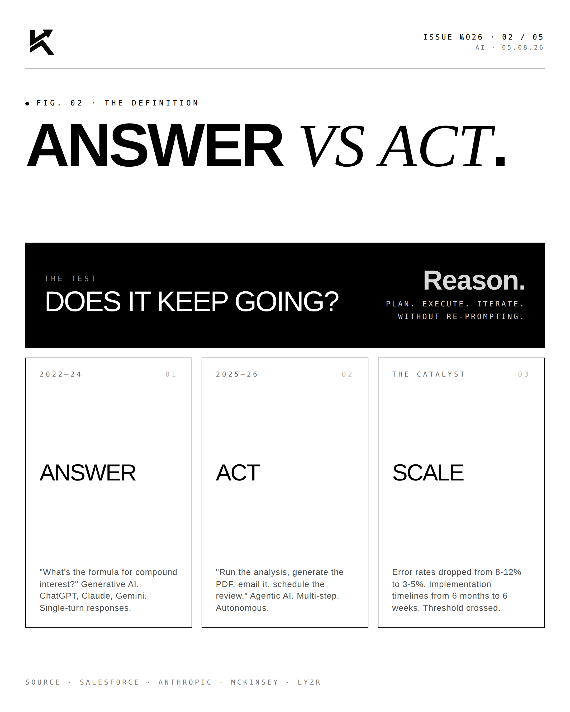
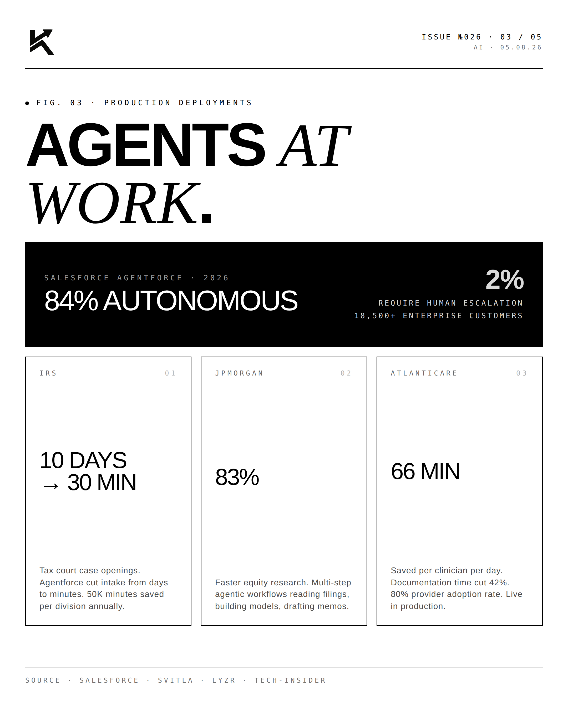
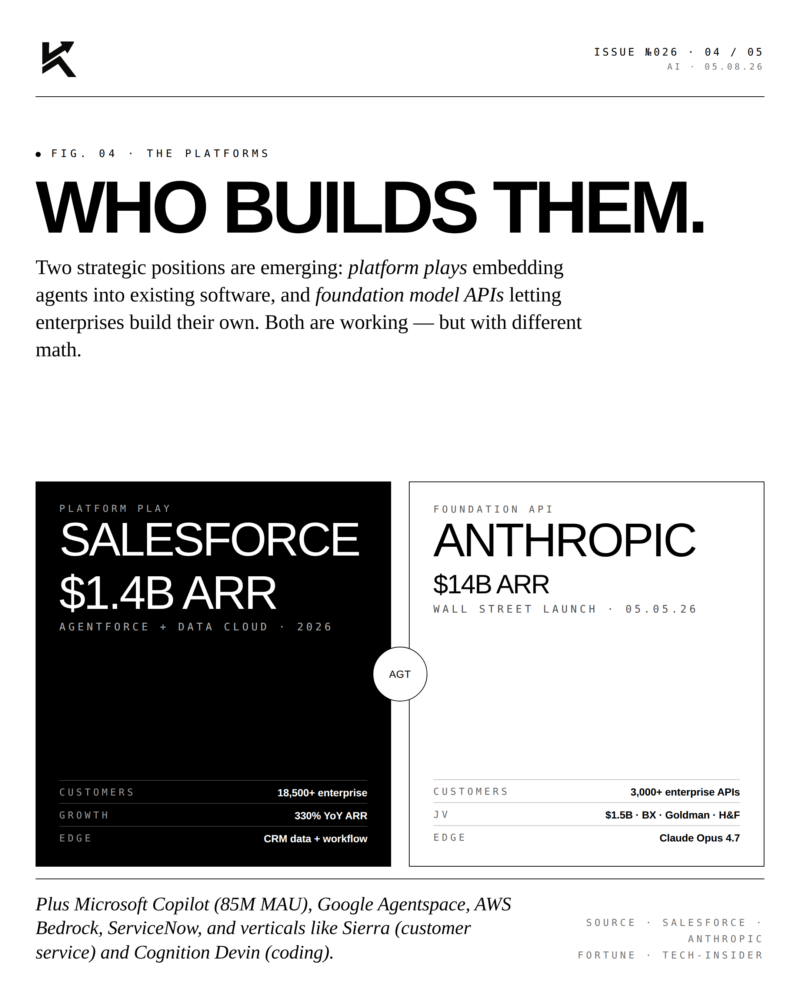
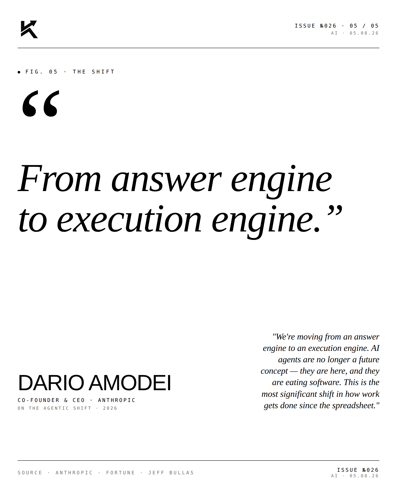

Agentic.
Anthropic just launched a suite of AI agents for the world's largest banks. Jamie Dimon appeared. $1.5B JV with Blackstone & Goldman. The agentic shift is here.

Answer vs Act.
Generative AI = answer engine. "What's the formula for compound interest?" Single-turn responses to questions. ChatGPT, Claude, Gemini.
Agentic AI = execution engine. "Run the analysis on this portfolio, generate a comparison report, save it as a PDF, email it to the CFO, and schedule a 15-minute review." Multi-step. Autonomous.
The simple test: does it require constant prompting after each step, or does it reason, plan, and complete multi-step tasks on its own?

Agents at Work.
The production deployments are the proof:

- IRS — Cut tax court case openings from 10 days to 30 minutes via Salesforce Agentforce. 50K minutes saved per division annually.
- JPMorgan — 83% faster equity research with agentic workflows.
- 1-800Accountant — 1,000+ client engagements handled in first 24 hours. 70% autonomous resolution during tax season.
- AtlantiCare — 66 minutes saved per clinician per day. Documentation time cut 42%. 80% provider adoption rate.
- Salesforce Agentforce overall — 84% AI-driven resolution rate. Only 2% of cases require human escalation.

Who Builds Them.
Two strategic positions are emerging: platform plays embedding agents into existing software, and foundation model APIs letting enterprises build their own custom agents.

- Salesforce Agentforce — $1.4B combined ARR, 18,500+ enterprise customers, 330% YoY ARR growth
- Anthropic Claude API — $14B ARR, 3,000+ enterprise customers, Wall Street launch May 5
- Microsoft Copilot — 85M monthly active users, distribution play across M365
- Google Agentspace, AWS Bedrock AgentCore, ServiceNow AI Agents
- Vertical specialists: Sierra (customer service), Cognition Devin (coding)
"From answer engine
to execution engine."DARIO AMODEICo-Founder & CEO · Anthropic · On the agentic shift · 2026
"We're moving from an answer engine to an execution engine. AI agents are no longer a future concept — they are here, and they are eating software. This is the most significant shift in how work gets done since the spreadsheet."
The biggest shift in enterprise software since the spreadsheet. And it's just getting started.
Disclosure
The author is a Limited Partner in 1789 Capital, which holds a position in xAI. Personal commentary and editorial analysis. Not investment advice, not an offer or solicitation.